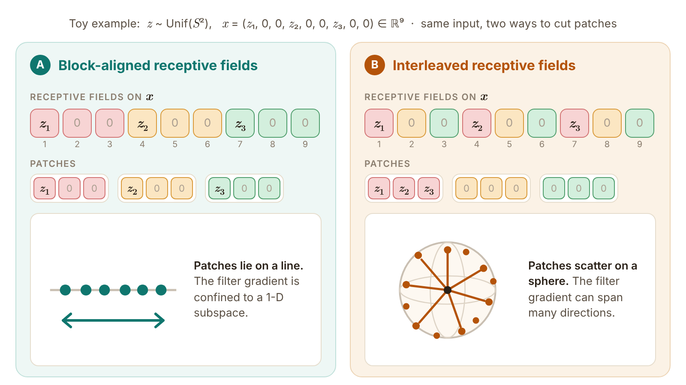
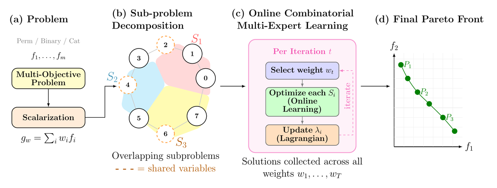
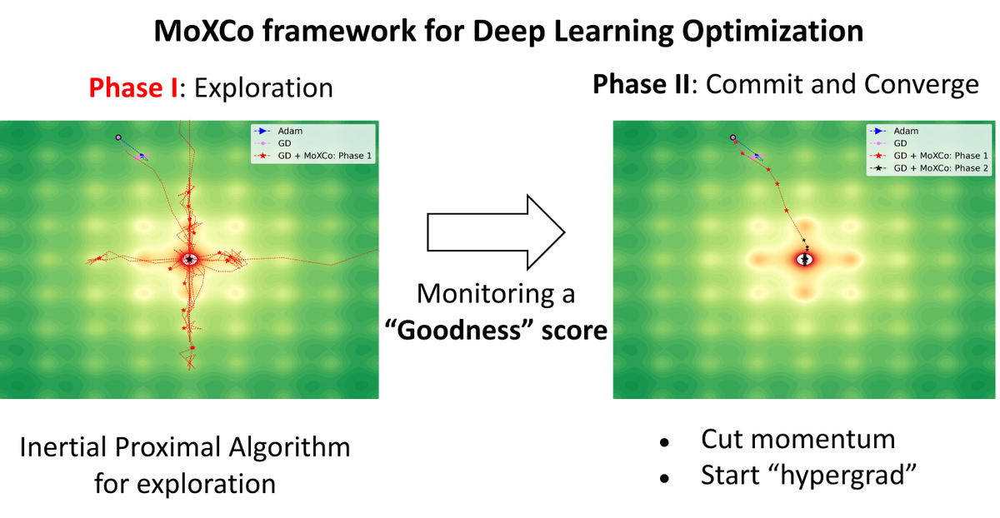
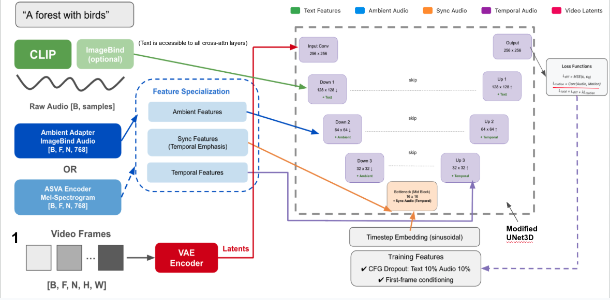
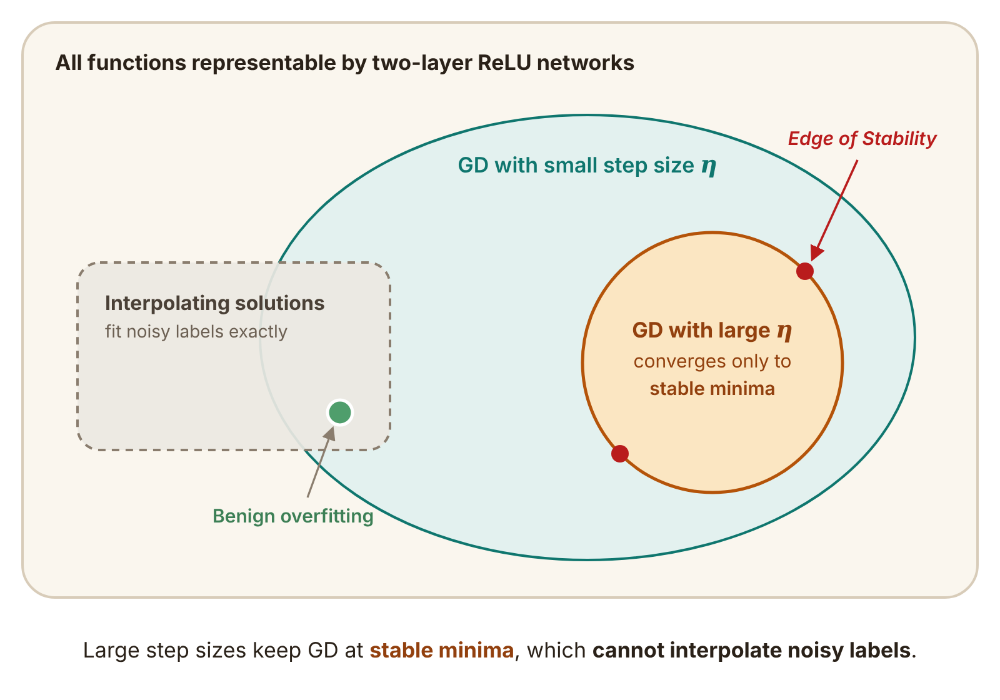
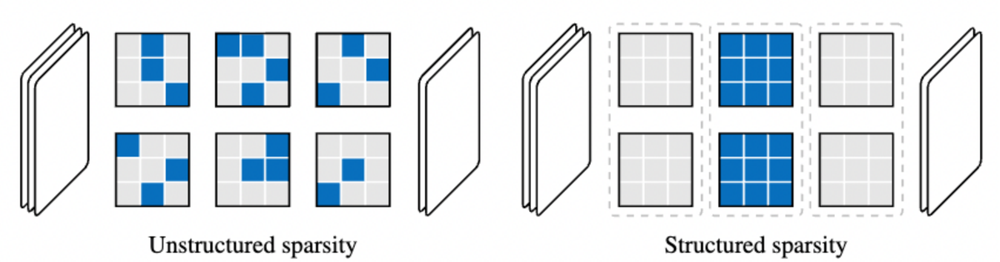
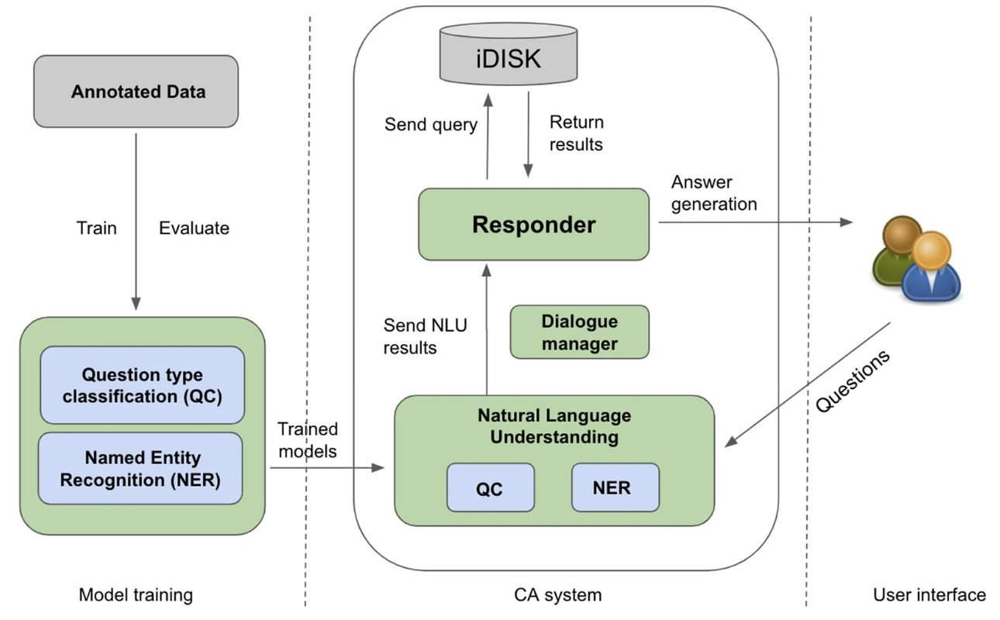
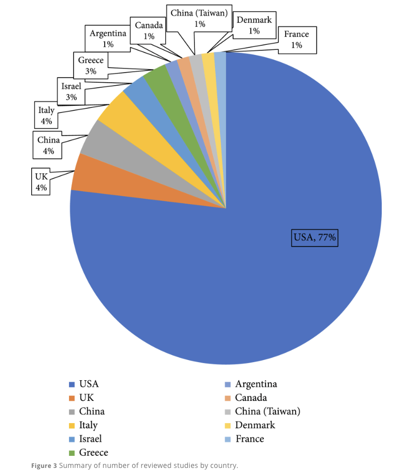
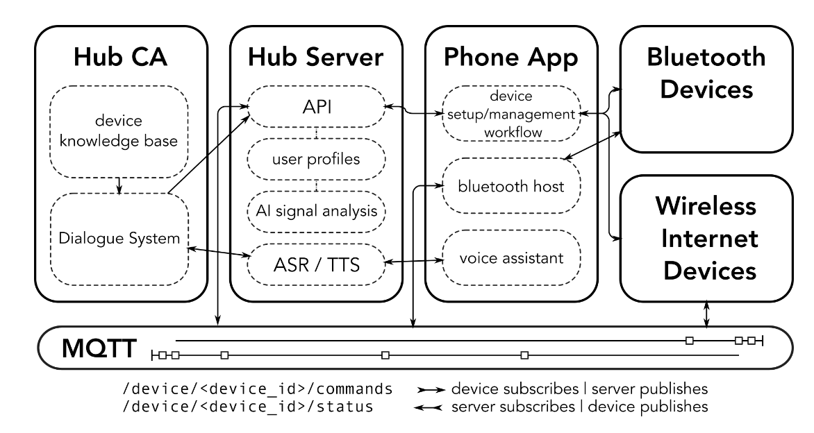

Publications
*Equal contribution. Also on Google Scholar.
2026
Noise-space steering


2025

CPAL 2025 (PMLR) · NeurIPS 2023 (M3L Workshop)

Amazon Alexa+ AI, 2025 · Technical Report
2024

NeurIPS 2024 (Spotlight)

NeurIPS 2024 · Workshop on Machine Learning & Compression
2022

BMC Medical Informatics and Decision Making, 2022 · IEEE ICHI 2020 (Oral Presentation)
2021

